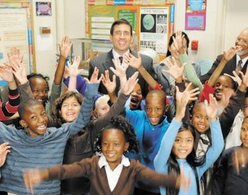

La promesa rota de Michael Scott deja a cientos de estudiantes en la ruina
La sucursal de Dunder Mifflin Scranton enfrenta uno de sus momentos más difíciles tras la revelación del controvertido caso conocido como “Scott’s Tots”. Hace más de una década, Michael Scott, gerente regional de la oficina, hizo una promesa que parecía llena de esperanza: garantizó becas educativas completas para un grupo de cien estudiantes de una escuela local, asegurando que él mismo apoyaría su futuro académico.
Sin embargo, al acercarse el tiempo de cumplir con esta promesa, la dura realidad salió a la luz. Debido a limitaciones económicas y circunstancias imprevistas, Michael no pudo hacer efectivo el compromiso que había asumido, dejando a estos jóvenes sin el respaldo que esperaban para continuar con sus estudios. La noticia generó una oleada de decepción y frustración, tanto entre los estudiantes como en sus familias.
En la oficina, el ambiente se volvió tenso y sombrío. Michael, visiblemente afectado, intentó explicar que su intención original siempre fue buena, pero la situación estaba fuera de su control. Él expresó sinceros arrepentimientos por no haber considerado el impacto que su promesa podría tener ni haber evaluado mejor sus capacidades antes de hacerla.
“El caso Scott’s Tots es un recordatorio contundente de la responsabilidad que conlleva cualquier compromiso, especialmente cuando afecta el futuro de muchas personas”, comentó una voz anónima dentro de la oficina. Por su parte, Michael ha prometido aprender de esta experiencia y trabajar para enmendar los errores de su pasado. La esperanza es que, a partir de esta experiencia, Dunder Mifflin Scranton encuentre maneras de contribuir positivamente a la comunidad y recuperar la confianza de quienes confiaron en unas palabras ahora incumplidas.